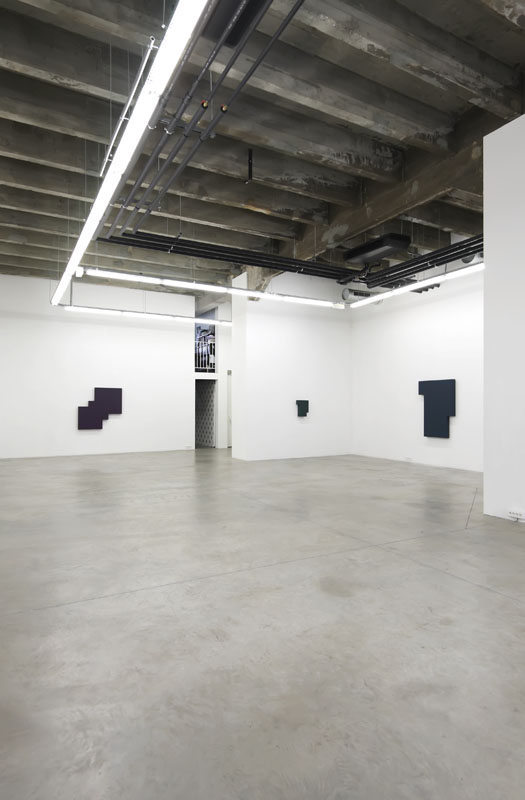

"72.16" 2011
132x132x9cm
Bois, peinture acrylique/Wood, Acrylic Paint
"69.13" 2009
48x36x12cm
Bois, peinture acrylique/Wood, Acrylic Paint
"69.34" 2011
144x108x9cm
Bois, peinture acrylique/Wood, Acrylic Paint
close / fermer